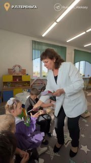

01
Общество и городская среда · событие дня
Всегда мечтала работать с детьми — и все эти годы щедро дарила им своё тепло и заботу
✅ В прошлом году мы отремонтировали детсад «Солнышко». Раньше здесь протекала крыша, был старый пищеблок и изношенные коммуникации. Капремонт помог создать для малышей комфортные условия — теперь здесь просторные игровые, новые спальни, оборудованный спортивно-музыкальный зал и пищеблок.…